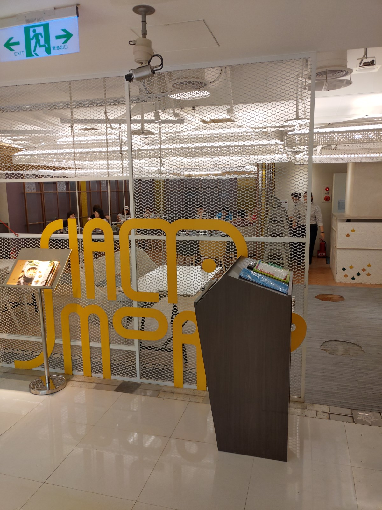
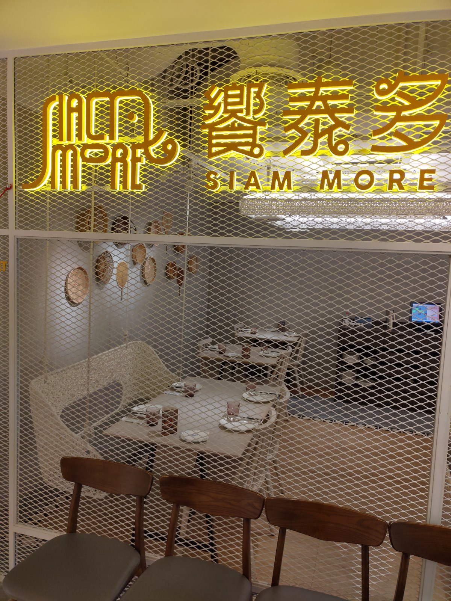
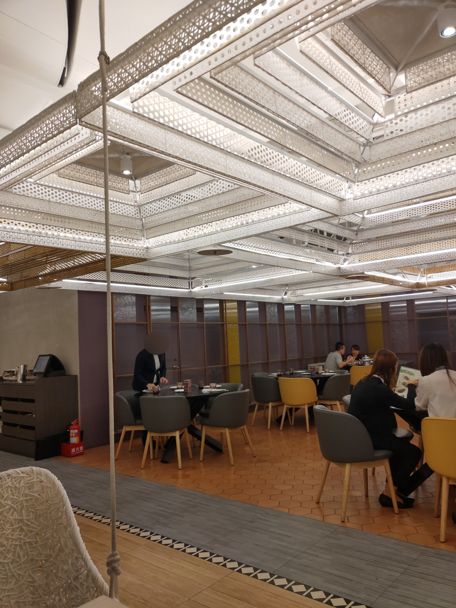
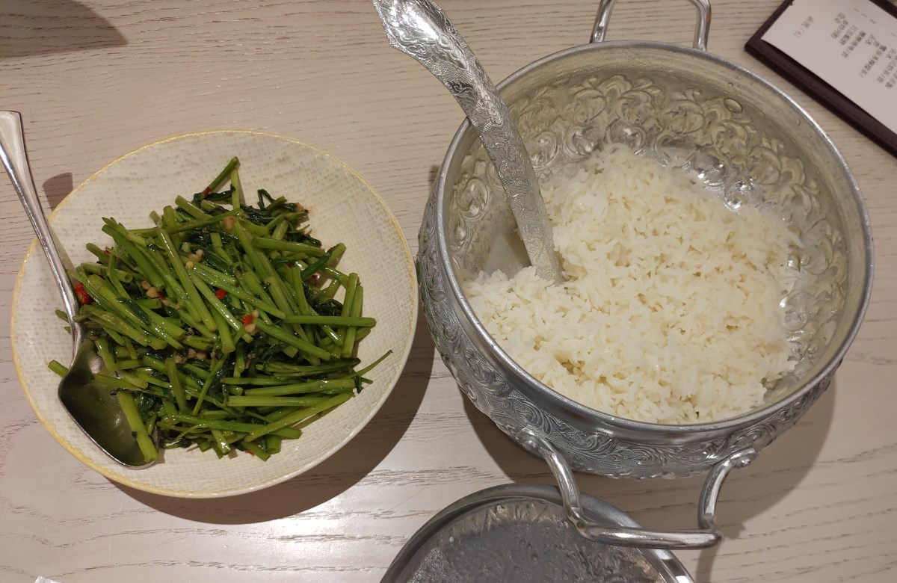
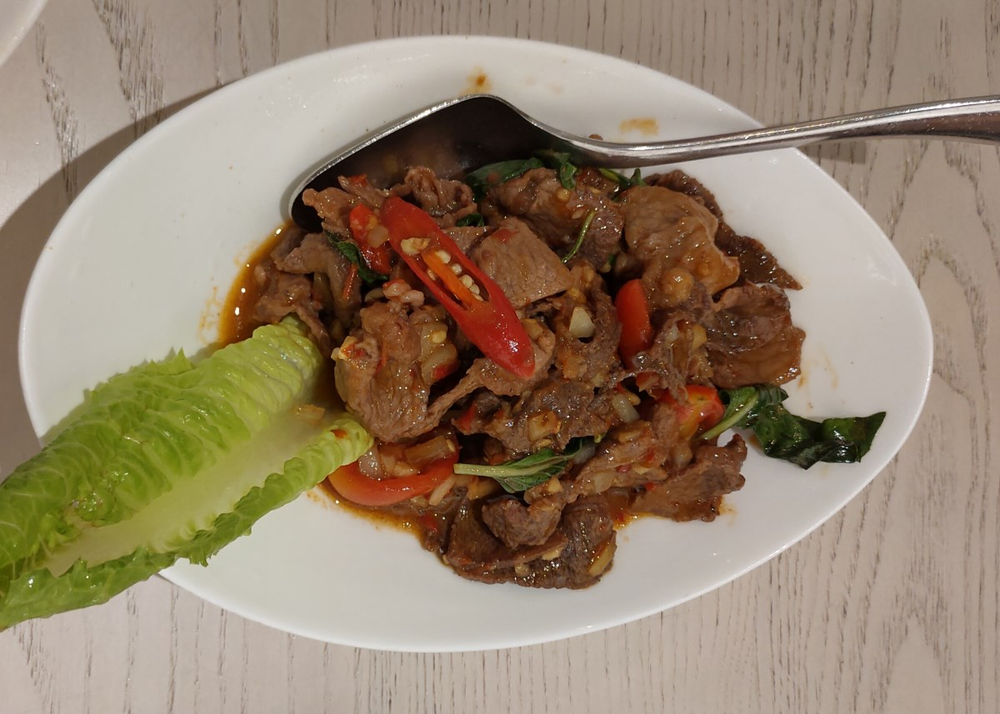
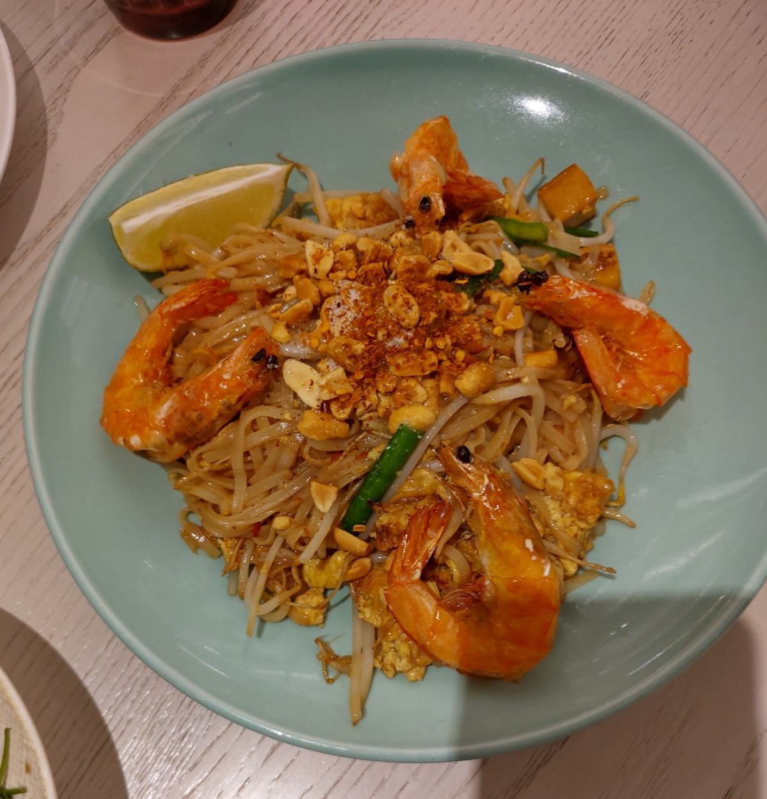
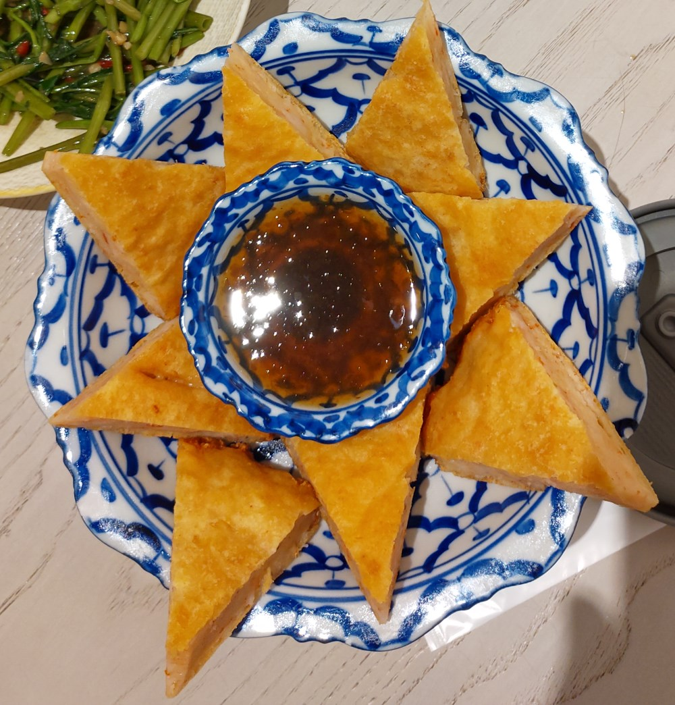
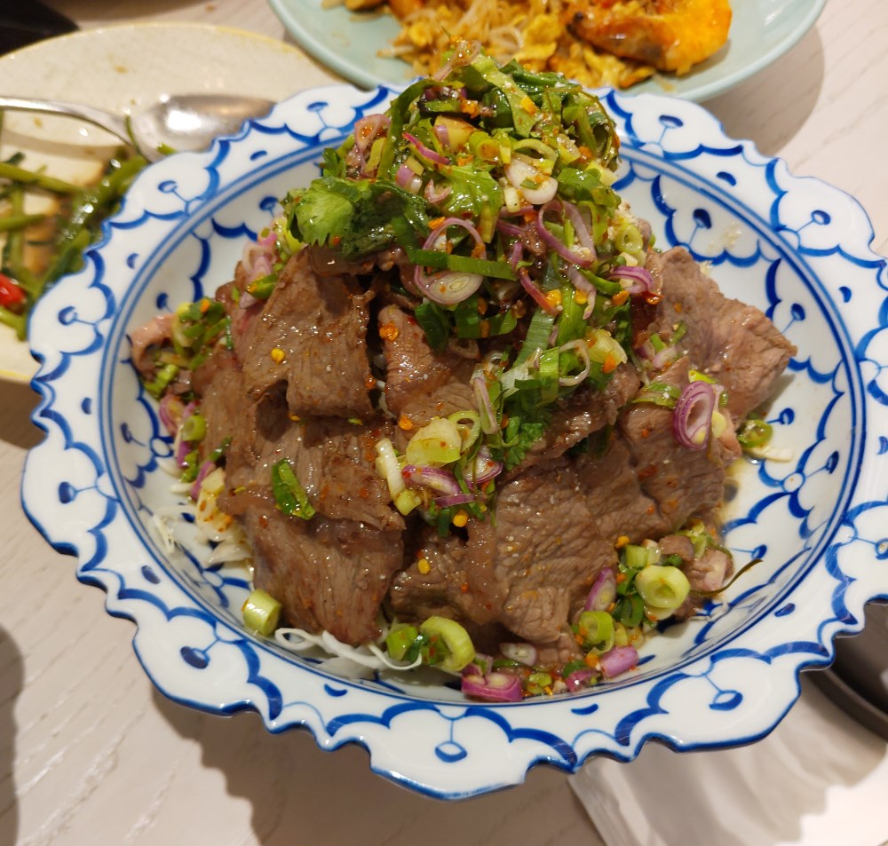
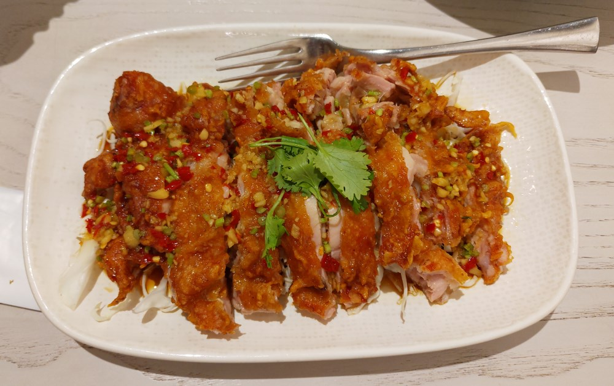
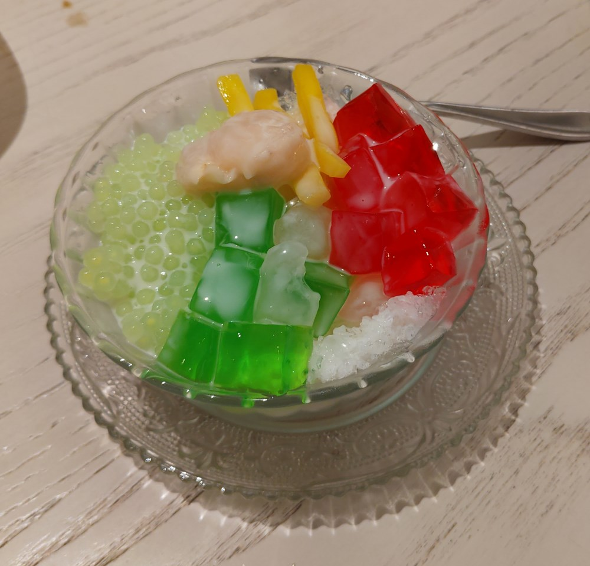

[新竹] 饗泰多新竹店
| 餐廳名稱: | 饗泰多新竹店 |
|---|---|
| 地 址: | 新竹市東區西大路323號3樓 ( 新竹大遠百3樓 ) |
| 營業時間: | 平日 中午時段：11:30~15:00，晚餐時段：17:30~21:30 |
| 假日 中午時段：11:00~16:00，晚餐時段：17:00~21:30 |
今天參加畢業典禮，結束時，畢業的那一位指定吃泰國菜，平常偶而 也會吃瓦城或是在地便宜泰國小館，今天慶祝畢業，找一間不一樣的， 最後決定是 饗泰多。饗泰多是 饗賓餐旅集團旗下的餐廳，這集團是福利川菜 轉型而來，成功打出 饗食天堂、開飯川食堂、果然匯蔬食宴、饗泰多泰式料理、 朵頤牛排及饗饗InParadise共6大品牌。已經吃過饗食天堂、開飯川食堂了， 想必 饗泰多 應該有類似水準，來踩雷看看。
饗泰多新竹店在新竹大遠百3樓，走電扶梯就上來了。其實就是百貨公司三樓的一角， 用鐵網隔開而以。  
今天不是周末，人不算多，但是最顛峰的時刻似乎也坐滿七成，雖然維持不到10分鐘。 
菜單懶得拍了，官網有高解析度的完整菜單。今天點了雙人套餐，再加點炒粄條， 今天有帶玻璃容器，有刻意多點一些，之後再自己打包。結果蝦醬空心菜跟白飯最先上。 
辣炒牛肉。 
炒粄條，服務生端上來時，在客戶面前完成最後一道手續，算是桌邊菜的噱頭。 
月亮蝦餅，超級厚。 
涼拌牛肉。 
椒麻雞。 
摩摩喳喳。 
也不知道為什麼，每次吃泰國菜大概就是這些菜，曾經試著點一些奇怪菜，例如什麼 瓦城的卻克里王子魚， 也是不大習慣，就是蝦醬空心菜，月亮蝦餅 這些經典菜色。最近比較少吃辣了，今天的涼拌牛肉，辣炒牛肉 有點太辣了， 要不是雙人套餐擺進去了，平常也不容易點道這些菜。饗泰多 這些菜色，都有不錯的水準， 有機會可再訪。